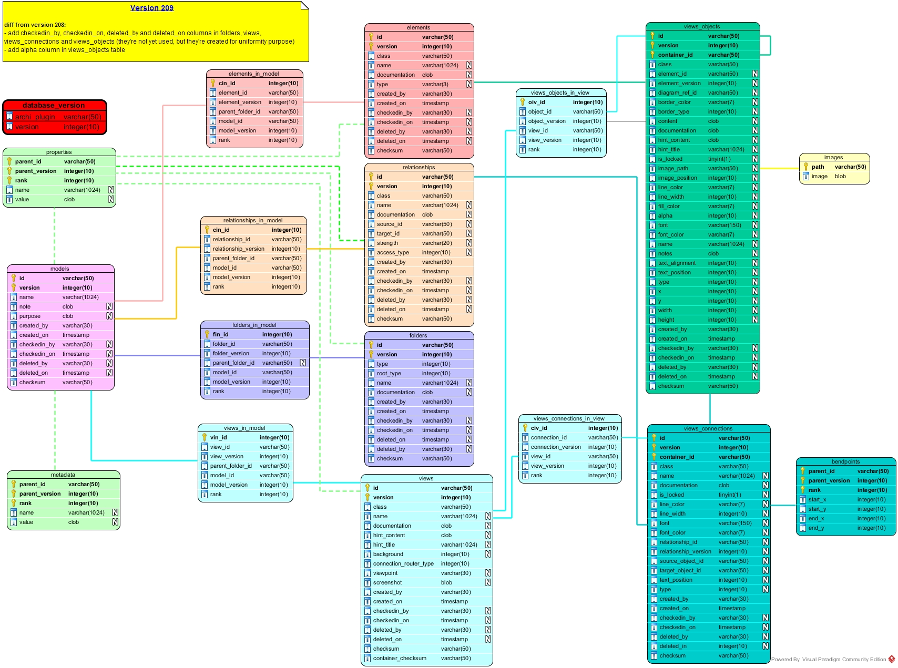

Database structure
This document describes the structure of the tables needed by the database plugin in relational databases.

1. Tables
1.1 database_version
This table allows the plugin to quickly check that the database has got the requested tables without checking all of them one by one.
It contains one line per plugin that has got tables in this database (this will allow several plugins to share the same database in the future):
- archi_plugin [varchar not null]: the name of the plugin ("DatabasePlugin" for instance)
- version [int not null]: the version of the database model. So far, the datamodel version must be 204
Each time the plugin connects to a database, it checks the existence and the content of this table.
- if the table does not exist, then it considers that all the other tables are missing and propose to create them,
- if the table does exist but the plugin name is not listed, then the plugin refuses to work with the database,
- if the plugin name is listed but the version is an old version, then the plugin updates the database to the newer version,
- if the version is unknown, then the plugin refuses to work with the database.
1.2. models
This table contains the models metadata that are stored in the database. There is one line per model and per version:
- id [varchar not null]: the id of the model
- version [int not null]: the version of the model
- name [varchar not null]: the name of the model. Please note that the model name may change between one version to another, so you must not rely on the name to distinguish models but rely on the id instead.
- note [clob]: the release note of the version of the model
- purpose [clob]: the purpose of this version of the model
- created_by [varchar not null]: the name of the user who exported this version of the model to the database
- created_on [timestamp not null]: the date and time when the version of the model has been exported to the database
- checkedin_by [varchar not null]: not used (yet)
- checkedin_on [varchar not null]: not used (yet)
- deleted_by [varchar not null]: not used (yet)
- deleted_on [varchar not null]: not used (yet)
- checksum [varchar not null]: a md5 checksum calculated with the model's id, name, release note, purpose and properties.
Models may have properties.
1.3. folders
This table contains the folders that are stored in the database. There is one row per folder and per version:
- id [varchar not null]: the id of the folder
- version [int not null]: the version of the folder
- type [int not null]: the type of the folder (strategy, business, application, ... or user)
- root_type [int not null]: the type of the root folder that holds this folder (as a folder may have a "user" type, we must know the root folder type to determine which kind of elements or relationships can be stored in this folder)
- name [varchar]: the name of the folder Please note that the folder may be renamed from one version to another, so you must not rely on the name to distinguish folders but rely on the id instead.
- documentation [clob]: the documentation of the folder
- created_by [varchar not null]: the name of the user who exported this version of the folder to the database
- created_on [timestamp not null]: the date and time when the version of the folder has been exported to the database
- checksum [varchar not null]: a md5 checksum calculated with the folder's id, name, type, root_type, name, documentation, and properties.
This table does not link the folders to any model (c.f. 1.4. folders_in_model).
Folders may have properties.
1.4. folders_in_model
This is a relation table that permits to know which folders is included in which model (a folder may be shared between several models). There is one row per folder and per model:
- fim_id [int autoincrement]: The id of the row
- folder_id [varchar not null]: the id of the folder
- folder_version [int not null]: the version of the folder
- parent_folder_id [varchar]: the id of the folder's parent in that model (null if the folder is a root folder)
- model_id [varchar not null]: the id of the model that contains the folder
- model_version [int not null]: the version of the model that contains the folder
- rank [int not null]: allows to import the folders in the same order than they've been exported
1.5. elements
This table contains the elements that are stored in the database. There is one row per element and per version:
- id [varchar not null]: the id of the element
- version [int not null]: the version of the element
- class [varchar not null]: the class of the element ("Node", "BusinessActor", "ApplicationInterface", ...)
- name [varchar]: the name of the element. Please note that the element may be renamed from one version to another, so you must not rely on the name to distinguish elements but rely on the id instead.
- documentation [clob]: the documentation of the element
- type [varchar]: The type of the element (used to distinguish AND from OR junctions)
- created_by [varchar not null]: the name of the user who exported this version of the element to the database
- created_on [timestamp not null]: the date and time when the version of the element has been exported to the database
- checkedin_by [varchar not null]: not used (yet)
- checkedin_on [varchar not null]: not used (yet)
- deleted_by [varchar not null]: not used (yet)
- deleted_on [varchar not null]: not used (yet)
- checksum [varchar not null]: a md5 checksum calculated with element's id, class, name, documentation, type and properties.
This table does not link the elements to any model (c.f. 1.6. elements_in_model).
Elements may have properties.
1.6. elements_in_model
This is a relation table that permits to know which elements is included in which model (an element may be shared between several models)). There is one row per element and per model:
- eim_id [int autoincrement]: The id of the row
- element_id [varchar not null]: the id of the element
- element_version [int not null]: the version of the element
- parent_folder_id [varchar not null]: the id of the folder where the element sits in this model
- model_id [varchar not null]: the id of the model that contains the element
- model_version [int not null]: the version of the model that contains the element
- rank [int not null]: allows to import the elements in the same order than they've been exported
1.7. relationships
This table contains the relationships that are stored in the database. There is one row per relationship and per version:
- id [varchar not null]: the id of the relationship
- version [int not null]: the version of the relationship
- class [varchar not null]: the class of the relationship ("CompositionRelationship", "ServingRelationship", ...)
- name [varchar]: the name of the relationship. Please note that the relationship may be renamed from one version to another, so you must not rely on the name to distinguish elements but rely on the id instead.
- documentation [clob]: the documentation of the relationship
- source_id> [varchar]: the id of the source of the relationship (may be the id of an element or a relationship)
- target_id> [varchar]: the id of the target of the relationship (may be the id of an element or a relationship)
- strength [varchar]: The strength of the relationship (relevant when class is "InfluenceRelationship")
- access_type [varchar]: The access type of the relationship (relevant when class is "AccessRelationship")
- created_by [varchar not null]: the name of the user who exported this version of the relationship to the database
- created_on [timestamp not null]: the date and time when the version of the relationship has been exported to the database
- checkedin_by [varchar not null]: not used (yet)
- checkedin_on [varchar not null]: not used (yet)
- deleted_by [varchar not null]: not used (yet)
- deleted_on [varchar not null]: not used (yet)
- checksum [varchar not null]: a md5 checksum calculated with element's id, class, name, documentation, source_id, target_id, strength, access_type, and properties.
This table does not link the relationships to any model (c.f. 1.8. relationships_in_model)
Relationships may have properties.
1.8. relationships_in_model
This is a relation table that permits to know which relationships is included in which model (a relationship may be shared between several models)). There is one row per relationship and per model:
- rim_id [int autoincrement]: The id of the row
- relationship_id [varchar not null]: the id of the relationship
- relationship_version [int not null]: the version of the relationship
- parent_folder_id [varchar not null]: the id of the folder where the relationship sits in this model
- model_id [varchar not null]: the id of the model that contains the relationship
- model_version [int not null]: the version of the model that contains the relationship
- rank [int not null]: allows to import the relationships in the same order than they've been exported
1.9. views
This table contains the views (diagrams, canvas and sketchs) that are stored in the database. There is one row per view and per version:
- id [varchar not null]: the id of the view
- version [int not null]: the version of the view
- class [varchar not null]: the class of the view ("ArchimateDiagramModel", "SketchModel" or "CanvasModel")
- name [varchar]: the name of the view. Please note that the view may be renamed from one version to another, so you must not rely on the name to distinguish elements but rely on the id instead.
- documentation [clob]: the documentation of the view
- hint_content [clob]: the hint content of the view
- hint_title [varchar]: the hint title of the view
- created_by [varchar not null]: the name of the user who exported this version of the view to the database
- created_on [timestamp not null]: the date and time when the version of the view has been exported to the database
- background [int]: the background ofthe view (relevant if class is "SketchModel").
- connection_router_type [int not null]: the connection router type of the view
- viewpoint [varchar]: the viewpoint of the view (relevant if class is "ArchimateDiagramModel").
- checksum [varchar not null]: a md5 checksum calculated with element's id, class, name, documentation, source_id, target_id, strength, access_type, and properties.
This table does not link the views to any model (c.f. 1.10. views_in_model)/
Views may have properties.
1.10. views_in_model
This is a relation table that permits to know which views is included in which model (a view may be shared between several models)). There is one row per view and per model:
- vim_id [int autoincrement]: The id of the row
- view_id [varchar not null]: the id of the view
- view_version [int not null]: the version of the view
- parent_folder_id [varchar not null]: the id of the folder where the view sits in this model
- model_id [varchar not null]: the id of the model that contains the view
- model_version [int not null]: the version of the model that contains the view
- rank [int not null]: allows to import the views in the same order than they've been exported
1.11. views_objects
This table contains the graphical objects (representation of elements, notes, ...) that are present in the model views. There is one line per graphical object and per version:
- id [varchar not null]: id of the view object
- version [int not null]: version of the view object
- class [varchar not null]: class of the view object
- view_id [varchar not null]: id of the view that contains the view object
- view_version [int not null]: version of the view that contains the view object
- container_id [varchar not null]: id of the container that directly contains the view object (view objects can contain other view objects)
- element_id [varchar]: id of the element that the view object refers to (null if the view object does not refer to any element)
- element_version [int]: version of the element that the view object refers to (null if the view object does not refer to any element)
- diagram_ref_id [varchar]: Id of the diagram reference (if class is DiagramReference)
- border_color [varchar]: color of the view object border
- border_type [int]: type of the view object border
- content [clob]: text content of the view object (if class is CanvasModelBlock or CanvasModelSticky))
- documentation [clob]: documentation of the view object (in reality, this is the documentation of the element the object refers to, it is present in this table to ease human beings to know which object it is)
- hint_content [clob]: the hint content of the view object
- hint_title [varchar]: the hint title of the view object
- is_locked [boolean]: the lock status of the view object
- image_path [varchar]: the path of the image displayed inside the view object
- image_position [int]: the path of the image in the view object
- line_color [varchar]: the line color of the view object
- line_width [int]: the line width of the view object
- fill_color [varchar]: the background color of the view object
- font [varchar]: the font used to display the view object label
- font_color [varchar]: the font color used to display the view object label
- name [varchar]: the name of the view object (in reality, this is the name of the element the object refers to, it is present in this table to ease human beings to know which object it is)
- notes [clob]: the notes of the view object
- source_connection [clob]: the comma separated list of 1.12. views_connections that source this view object
- target_connection [clob]: the comma separated list of 1.12. views_connections that target this view object
- text_alignment [int]: Alignment of the text in the view object
- text_position [int]: Position of the text in the view object
- type [int]: type of the view object
- x [int]: x location of the view object in its container
- y [int]: y location of the view object in its container
- width [int]: width of the view object
- height [int]: height og the view object
- rank [int]: allows to import the view objects in the same order than they've been exported
- checksum [varchar not null]: a md5 checksum calculated with the view object fields (excluding the name and the documentation that is related to the referred element)
1.12. views_connections
This table contains the graphical connections (representation of relationships) that are present in the model views. There is one line per graphical connection and per version:
- id [varchar not null]: id of the view connection
- version [int not null]: version of the view connection
- class [varchar not null]: class of the view connection
- view_id [varchar not null]: id of the view that contains the view connection
- view_version [int not null]: version of the view that contains the view connection
- container_id [varchar not null]: id of the container that directly contains the view connection (view connections can be contained by a view, but also by 1.11. views_objects)
- relationship_id [varchar]: id of the element that the view connection refers to
- relationship_version [int]: version of the relationship that the view connection refers to
- documentation [clob]: documentation of the view connection (in reality, this is the name of the relationship the object refers to, it is present in this table to ease human beings to know which object it is)
- is_locked [boolean]: the lock status of the view connection
- line_color [varchar]: the line color of the view connection
- line_width [int]: the line width of the view connection
- font [varchar]: the font used to display the view connection label
- font_color [varchar]: the font color used to display the view connection label
- name [varchar]: the name of the view object (in reality, this is the name of the relationship the object refers to, it is present in this table to ease human beings to know which object it is)
- source_connection [clob]: the comma separated list of views connections that source this view connection
- target_connection [clob]: the comma separated list of views connections that target this view connection
- text_position [int]: Position of the text in the view connection
- type [int]: type of the view object
- rank [int]: allows to import the view connections in the same order than they've been exported
- checksum [varchar not null]: a md5 checksum calculated with the view connection fields (excluding the name and the documentation that are related to the referred relationship)
View connections are compound of 1.13. bendpoints.
1.13. bendpoints
Views connections are compound of bendpoints. There is one row per bendpoint and per view connection:
- parent_id [varchar not null]: id of the View connection
- parent_version [int not null]: version of the View connection
- rank [int]: allows to import the bendpoints in the same order than they've been exported
- start_x [int]: x location of the point starting the segment
- start_y [int]: y location of the point starting the segment
- end_x [int]: x location of the point ending the segment
- end_y [int]: y location of the point ending the segment
1.14. images
This table contains the images stored in the database. There is one line per image:
- path [varchar]: path of the image
- image [blob]: image itself (format jpg, png, bmp, gif, tiff, ... depending on the image)
- checksum [varchar]: checksum of the image (not used at the moment as the path is unique for a given image)
1.15. properties
Models, folders, elements, relationships and views may have properties. There is one row per property and per parent:
- parent_id [varchar not null]: id of the model component that owns the property (may be the model, a folder, an element, a relationship or a view)
- parent_version [int not null]: version of the component that owns the property
- rank [int]: allows to import the properties in the same order than they've been exported
- name [varchar]: name of the property
- value [varchar]: value of the property